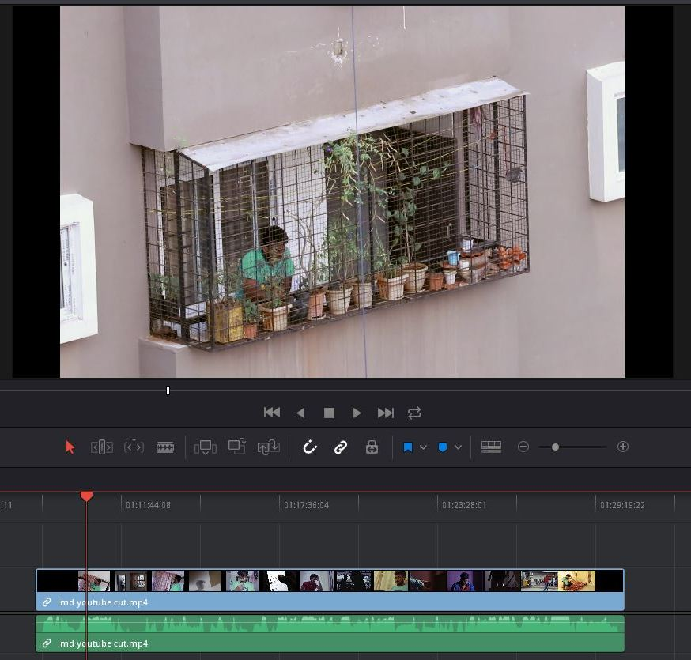
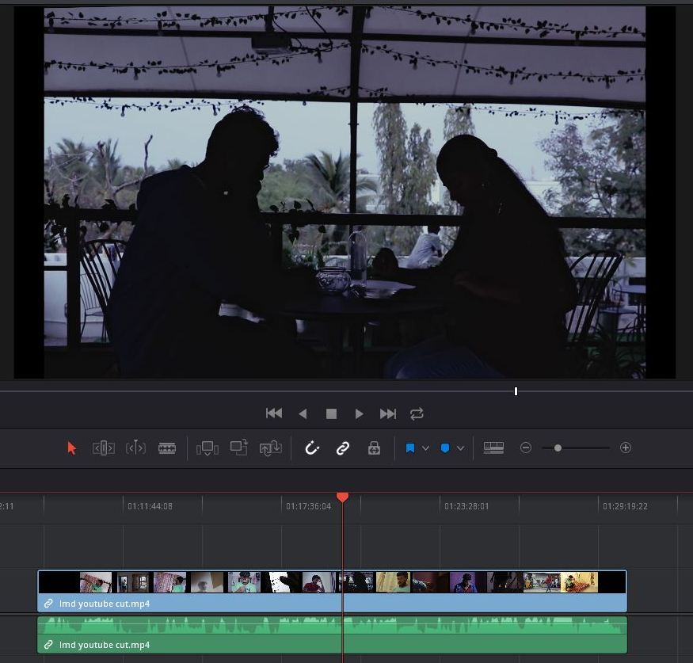
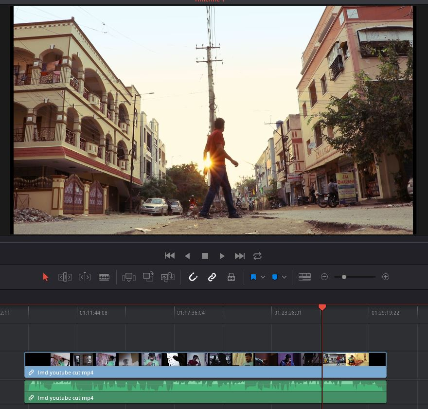
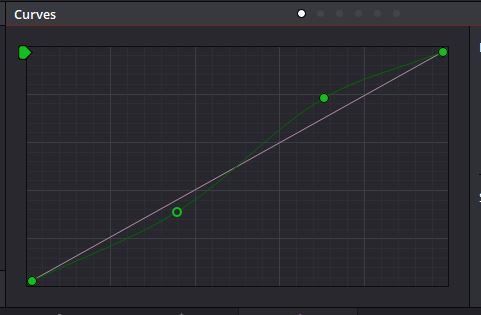
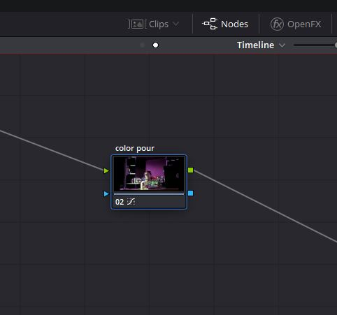
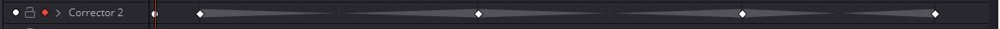
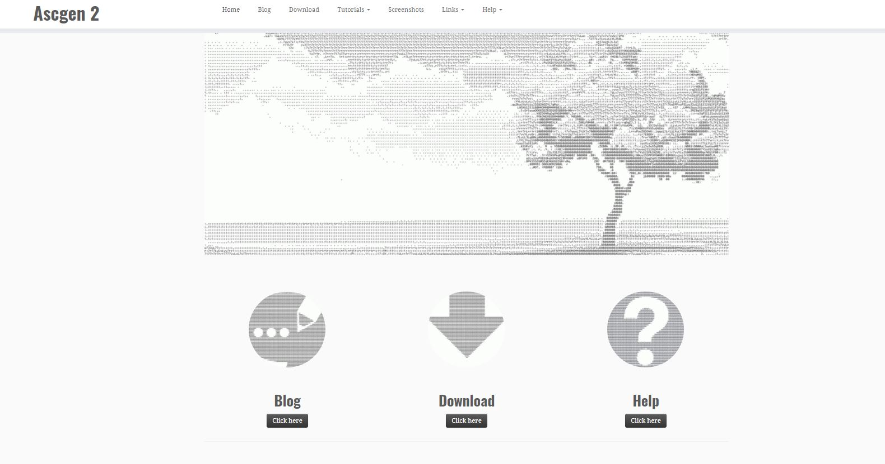
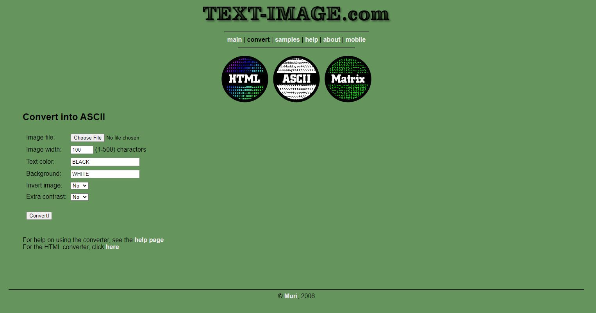

Breakdown:Living My Dream
 Mixed aspect frames
I used mixed aspect frame ratios with a shift from 1.50 to 1.66 to 1.78(common 16x9). I wanted to make the frame feel claustraphobic with character boxing up using 1.55 frame.
I wanted to make the character feel like a small powerless thing moved by force of air using 1.78 frame.
  Opposite of warm cool - orange cyan look.
The fact that orange cyan can be pleasing to the human eye means the opposite colors should make uncomfortable on the human eye. So we tried putting magenta and green as a replacement of orange and cyan.
To make an effect in rising uncomfortability of story we dialed levels of Magenta and Green with a curve node in timeline mode with keyframing it for dialing up of the node strength
Breakdown:Macha repeat it
Moving text pictures
There are converters which can convert an image luminance value to appropriate text character resulting a close image in text style.
I used Ascgen 2 to convert images to that style by rendering video into Jpeg's and manually converted one by one and made those pictures into video. There are other converters available which can do more styles and this is something grabbed my eye.
Resources for screenwriters
Storytelling
- The Art of Dramatic Writing - Lajos Egri
- The Anatomy of Story - John Truby
- Malcom gladwell masterclass
- R.L stine masterclass
- Margret atwood masterclass
- Pixars 22 rules of storytelling
- QuotidianWriter
Craft of screenwriting
- Screenplay - Syd Field
- Screencraft.com
- filmcourage.com
Genre
Thriller
Comedy
- Judd Apatow masterclass
- Steve Martin masterclass